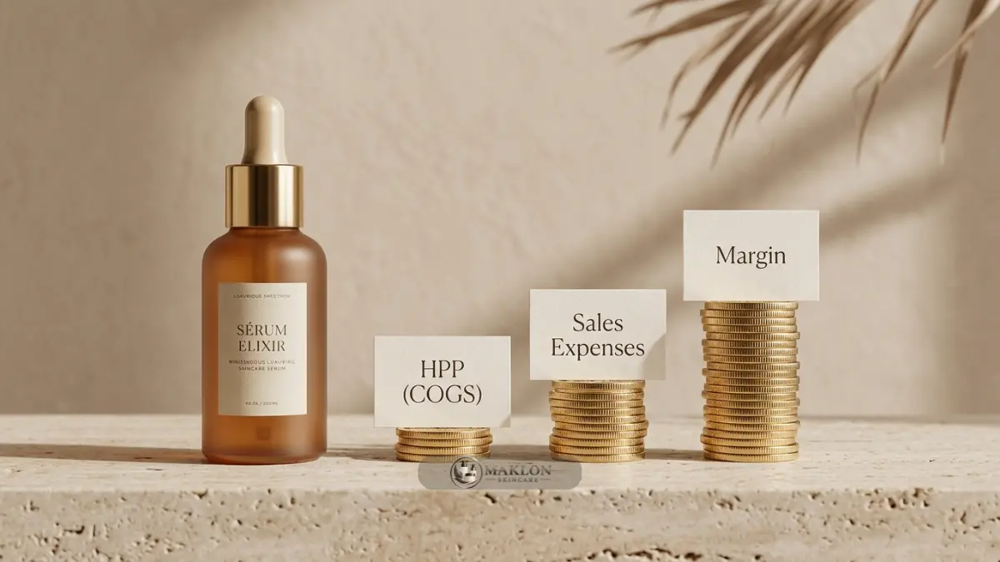

Cara hitung HPP skincare adalah menjumlahkan seluruh biaya bahan, kemasan, produksi, dan tenaga kerja dalam satu batch, lalu membaginya dengan jumlah produk layak jual.
- HPP merupakan fondasi dasar seluruh penentuan harga jual, sehingga wajib dihitung sebelum produk dipasarkan.
- Bahan baku kosmetik nasional masih didominasi impor sekitar 80 persen, sehingga pos biaya harus dipantau secara berkala.
- Masukkan pos biaya pengujian lab, perizinan BPOM, dan potensi produk reject ke dalam komponen HPP riil.
- Markup dan margin adalah dua konsep hitung yang berbeda, dan harga jual harus dicek pada semua kanal penjualan.
- Perbarui lembar kalkulasi HPP setiap kali ada fluktuasi harga bahan baku, biaya kemasan, atau kapasitas batch produksi.
Apa Itu HPP Skincare dan Mengapa Harus Dihitung Sejak Awal?
HPP skincare adalah total biaya yang dikeluarkan untuk menghasilkan satu unit produk siap jual, dan harus dihitung sejak awal agar harga jual tidak merugikan bisnis.
HPP merupakan singkatan dari Harga Pokok Penjualan. Angka ini bertindak sebagai titik nol penentu kelangsungan finansial merek Anda.
Menjual produk di bawah angka HPP berarti menanggung kerugian langsung, sedangkan menjual sedikit di atas HPP belum tentu menyisakan keuntungan bersih setelah dipotong komisi marketplace dan biaya iklan.
Bahan baku kosmetik di Indonesia hingga saat ini masih didominasi pasokan impor hingga mencapai 80 persen.
Konsekuensinya, harga bahan dapat bergerak naik turun mengikuti dinamika kurs valuta asing dan kelancaran rantai pasok global.
Brand yang tidak cermat menghitung HPP berisiko mendapati margin keuntungan mereka tergerus habis tanpa disadari.
Menghitung HPP sejak fase perencanaan membantu pemilik merek memilih formula, jenis botol wadah, dan jumlah volume batch yang paling sesuai dengan target pasar.
Komponen Biaya Apa Saja yang Masuk ke HPP Skincare?
Komponen HPP skincare meliputi bahan baku atau biaya maklon, kemasan primer dan sekunder, label, tenaga kerja, uji laboratorium, perizinan, overhead, dan cadangan produk reject.
Berikut rincian pos pengeluaran produksi yang wajib Anda catat secara terperinci:
- Bahan baku atau biaya jasa maklon: Biaya per unit dari pabrik maklon untuk sediaan cairan atau racikan bahan kimiawi.
- Kemasan primer: Botol kaca, botol dropper, pot jar, atau tube fleksibel yang menampung cairan langsung.
- Kemasan sekunder: Kotak dus karton luar, segel shrink plastik, dan kardus master box pengiriman.
- Label dan percetakan: Ongkos cetak stiker label botol atau biaya teknik hot-print foil emas.
- Tenaga kerja dan packing: Upah pekerja untuk proses pengeleman label, pengemasan dus, dan quality inspection.
- Uji laboratorium dan legalitas: Biaya uji mikroba dan sertifikasi yang diamortisasi (dibagi rata) ke seluruh unit produk.
- Biaya overhead fasilitas: Listrik, utilitas pergudangan, dan biaya perawatan alat bila berproduksi mandiri.
- Cadangan unit reject: Alokasi biaya untuk produk yang rusak tutupnya, rembes, atau pecah saat proses perakitan.
Biaya promosi digital seperti iklan media sosial dan komisi affiliate biasanya dicatat terpisah sebagai biaya penjualan komersial, bukan bagian dari HPP pabrikasi.
Bagaimana Rumus dan Contoh Perhitungan HPP Skincare?
Rumus HPP per unit adalah total seluruh biaya produksi dibagi jumlah produk layak jual, sehingga produk reject ikut dihitung sebagai beban biaya riil.
Rumus Baku: HPP per unit = Total Biaya Produksi Batch / Jumlah Produk Layak Jual.

Berikut ilustrasi simulasi biaya sediaan serum wajah 30 ml untuk batch produksi 1.000 unit lewat maklon (angka di bawah hanyalah ilustrasi pembantu):
| Komponen Pengeluaran | Biaya per Unit (Rp) | Total Biaya 1.000 Unit (Rp) |
|---|---|---|
| Biaya Maklon (Formula Sediaan & Pengisian) | Rp 18.000 | Rp 18.000.000 |
| Botol Dropper Kaca 30 ml | Rp 4.500 | Rp 4.500.000 |
| Dus Kemasan Luar (Full Color) | Rp 1.500 | Rp 1.500.000 |
| Stiker Label & Segel Hologram | Rp 800 | Rp 800.000 |
| Upah Packing, QC, & Penyusunan | Rp 700 | Rp 700.000 |
| Amortisasi Uji Lab & Notifikasi BPOM | Rp 3.000 | Rp 3.000.000 |
| Total Pengeluaran Produksi | Rp 28.500 | Rp 28.500.000 |
Katakanlah dari 1.000 unit tersebut terdapat 20 unit reject yang cacat botolnya, sehingga produk yang layak dipasarkan berjumlah 980 unit.
Maka HPP riil per unit = Rp 28.500.000 / 980 unit = Rp 29.082 per botol.
Bila produk reject diabaikan, HPP tampak seolah hanya Rp 28.500. Selisih tersebut akan menjadi kerugian tak terlihat yang membesar pada skala produksi ribuan unit.
Apa Perbedaan Margin dan Markup dalam Harga Skincare?
Markup adalah persentase kenaikan dari HPP, sedangkan margin adalah persentase laba dari harga jual, sehingga angka markup selalu lebih besar daripada angka margin.
Mari kita gunakan contoh angka HPP Rp 29.082 dan harga jual eceran ritel konsumen sebesar Rp 75.000 per botol:
- Nominal Laba Kotor: Rp 75.000 - Rp 29.082 = Rp 45.918 per unit produk.
- Persentase Margin Kotor: (Rp 45.918 / Rp 75.000) × 100% = sekitar 61 persen.
- Persentase Markup: (Rp 45.918 / Rp 29.082) × 100% = sekitar 158 persen.
Kedua angka persentase di atas menggambarkan nominal keuntungan yang persis sama, namun memiliki basis pembagi yang berbeda.
Menyamakan angka keduanya adalah sumber kekeliruan perhitungan yang paling sering menjebak pemilik brand pemula.
Bagaimana Strategi Pricing Skincare yang Menjaga Profit?
Strategi pricing skincare yang menjaga profit memadukan HPP, harga pesaing, nilai produk bagi konsumen, biaya penjualan, dan diskon reseller dalam satu struktur harga terpadu.
Mulai dari HPP dan target margin kotor
Tentukan target margin kotor Anda terlebih dahulu. Rumus harga minimal = HPP / (1 - Target Margin).
Pada HPP Rp 29.082 dan target margin 60 persen, harga minimal = Rp 29.082 / (1 - 0,60) = Rp 72.705, yang kemudian dibulatkan menjadi Rp 75.000 di pasaran.
Hitung biaya penjualan dan komisi platform
Asumsikan potongan biaya administrasi marketplace sebesar 10 persen dan alokasi iklan promosi sebesar 15 persen dari harga jual (total Rp 18.750 per unit).
Maka sisa laba bersih operasional = Rp 75.000 - Rp 29.082 (HPP) - Rp 18.750 (biaya penjualan) = Rp 27.168 per botol (sekitar 36 persen).
Angka inilah laba bersih yang sesungguhnya masuk ke kas bisnis Anda, bukan 61 persen seperti perhitungan margin kotor awal.
Siapkan struktur harga reseller dan agen
Jika mitra reseller diberikan potongan harga grosir sebesar 30 persen, maka harga beli reseller adalah Rp 52.500 per botol.
Margin kotor brand Anda menjadi (Rp 52.500 - Rp 29.082) / Rp 52.500 = sekitar 45 persen. Pastikan angka ini masih sanggup menutupi biaya operasional kantor dan pengiriman.
Bandingkan dengan harga pesaing dan persepsi nilai
Bandingkan produk Anda dengan penawaran kompetitor sejenis dari sisi bahan aktif, estetika botol, dan ukuran volume isi.
Brand Anda tidak harus selalu menjadi yang termurah. Konsumen bersedia membayar lebih tinggi apabila konsep pembeda produk dikomunikasikan secara meyakinkan.
Pilihan kemasan botol merupakan salah satu pengungkit biaya paling signifikan. Pelajari cara memilih wadah yang efisien dalam panduan desain packaging skincare yang estetis dan terkendali biayanya.
Apa Kesalahan Umum dalam Menghitung HPP Skincare?
Kesalahan umum menghitung HPP skincare meliputi melupakan biaya uji dan perizinan, mengabaikan produk reject, memakai harga bahan lama, dan menyamakan markup dengan margin.
Beberapa kelalaian lain yang patut Anda waspadai secara disiplin:
- Tidak memperhitungkan ongkos kirim pengiriman bahan baku dan wadah botol dari pabrik vendor menuju gudang perakitan.
- Menetapkan nominal harga jual hanya berlandaskan intuisi perasaan tanpa melihat angka struktur biaya riil.
- Lupa mengalokasikan anggaran untuk tester sampel gratis bagi influencer kecantikan serta biaya retur produk rusak.
- Tidak memperbarui lembar HPP saat nilai tukar dolar bergejolak menaikkan harga bahan baku kosmetik impor.
- Tidak menyediakan dana cadangan untuk uji laboratorium ulang ketika dilakukan perubahan konsentrasi formula, seperti diuraikan dalam panduan standar QC dan uji laboratorium skincare.
Buatlah lembar kalkulasi spreadsheet yang rapi dan selalu perbarui setiap kali Anda menerbitkan purchase order baru kepada pihak pabrik.
Kesimpulan Praktis: Menjaga Margin dan Pertumbuhan Brand Skincare
HPP yang dihitung lengkap dan diperbarui secara berkala membuat harga jual skincare realistis, margin profit aman dari kebocoran, dan keputusan produksi berikutnya lebih mudah diambil.
Urutan langkah praktisnya: himpun seluruh komponen pengeluaran, bagi total biaya dengan jumlah botol layak jual, tetapkan target margin kotor minimal 60%, kurangi pos biaya iklan dan marketplace, lalu uji kelayakan margin pada skema reseller.
Panduan lengkap mengenai keseluruhan tahapan bisnis dapat Anda telusuri dalam artikel cara memulai bisnis skincare dari ide hingga produk.
Dapatkan Estimasi HPP Transparan untuk Brand Anda
Ingin mengetahui estimasi rincian HPP akurat untuk formula produk skincare Anda? Kirimkan konsep formula, ukuran botol, dan target jumlah pesanan Anda melalui konsultasi maklon skincare untuk mendapatkan gambaran biaya terperinci sebagai dasar menyusun harga jual yang menguntungkan.